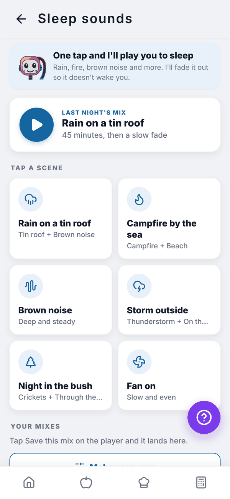
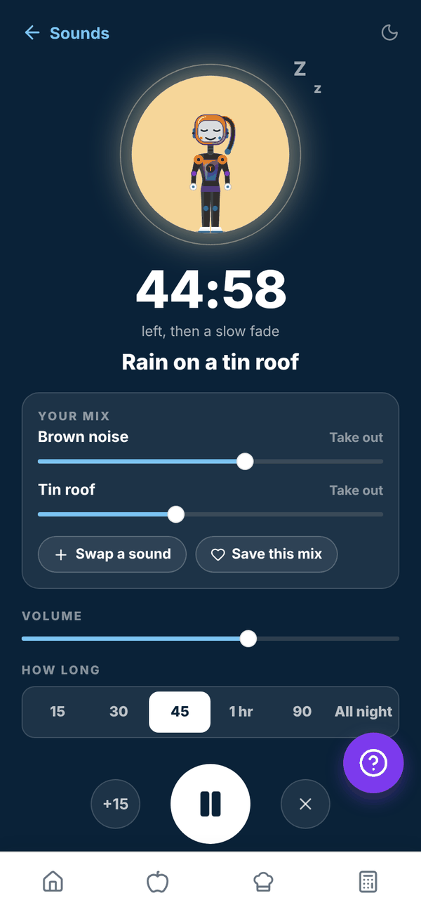

Totality Nutrition guide
Sleep sounds
One tap plays a ready made scene or last night's mix, or make and save your own, with a timer that fades out once you're asleep.
Sleep sounds play calming sounds while you drift off: rain, wind, water, fire, night sounds, hums and noise. It's free on every plan. Free
Tap the Sleep sounds card on Home.


One tap and play#
- LAST NIGHT'S MIX: one big play button for whatever you played last time.
- TAP A SCENE: six ready made mixes that start straight away. Rain on a tin roof, Campfire by the sea, Brown noise, Storm outside, Night in the bush and Fan on.
- YOUR MIXES: mixes you've saved. Tap one to play it.
- Make your own: build a mix from 35 sounds.
- HOW LONG: 15 min, 30 min, 45 min, 1 hour, 90 min or all night, with an optional slow fade at the end.
The player#
- YOUR MIX: each sound has its own slider, and the mix changes as it plays. Take out drops a sound.
- Add a sound (or Swap a sound when you have two) and Save this mix.
- VOLUME and HOW LONG, +15 for 15 more minutes, pause and stop.
Make your own#
Tap a category (Noise, Rain, Wind, Water, Fire, Night or Hum), then tap a sound. It joins the mix and starts playing. Tap it again and it leaves. Two sounds play at once.
On the phone app it keeps playing with the screen off. In a browser, keep the tab open; sound stops if the browser is closed.
Questions#
Does it cost anything?
No. Sleep sounds are free on every plan.
Can I play more than two sounds?
No, two at a time. With two playing, Swap a sound changes one.
Do my saved mixes follow me to another phone?
No. They're kept on the device you saved them on.